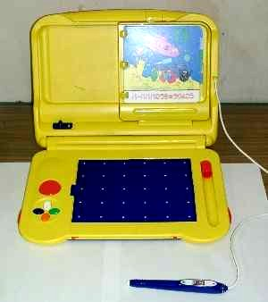
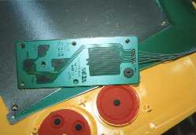
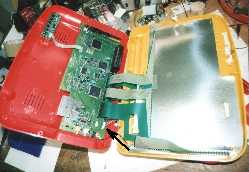
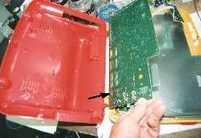
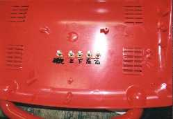
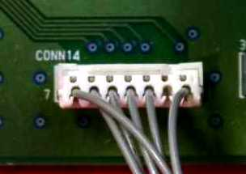
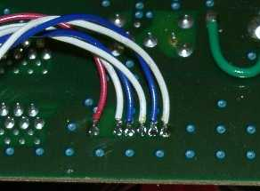
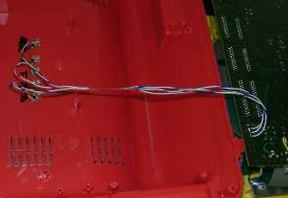
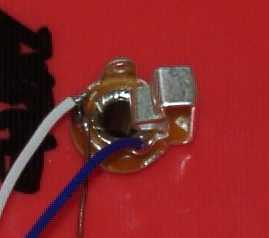
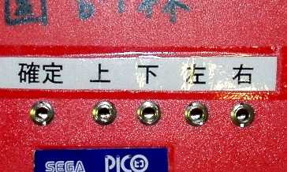

かならずお読みください→
ピコの改造

ピコ（pico）は株式会社セガの子供向けゲーム機です．
しかし，標準の操作スイッチは小さく位置も画面に近いため操作が困難な場合があります．
ここでは，ピコを改造し，上下左右キーと決定キー（上の写真，左手前）を外部接点スイッチで操作できるようにしました．
材料
- サトーパーツ，ＵＳ型ジャック（PJ-2240-J），５個
（購入先，（株）横山商会富山営業所，076-423-8500）参考単価100円．その他電子パーツ店などで入手可能です．
参考：これは，直径3.2mmの２極ジャックです．ジェリービーンスイッチなどはそのまま使えます．このジャックに対応するプラグは，サトーパーツ，US型プラグ（PJ-2240-P）参考価格100円です．スイッチを製作する場合にはこれをつかいます． - その他，電線を少し
工具
ドリル，はんだごて，ハンダなど
作り方
１．分解
左の写真はピコのふた部分を分解し，目的のスイッチの構造を裏側から見たものです．基盤は外してあります．ピコの押しボタンの裏には導電ゴムの接点があり，これを基板上の端子に押しつけ導通させるものです．原理的にはこの基板上の端子を外部に引き出し，外部の接点スイッチをつなげば操作できます．
しかし，構造上，ジャックを取り付ける場所はピコのふた部分には見あたりませんでした．よってジャックはピコ本体の背面につけることにし，配線をこの基盤から取り出すことはやめにしました．ですから，どうしてもピコのふた部分の中を見てみたいと言う方以外は，ここを分解しないほうがよいでしょう．

スイッチ裏の基盤からでている配線は，ピコのふたの蝶番部分を通り，本体裏側の基盤までつながっています．右の写真はピコ本体を分解したところです．赤い樹脂部品はピコ本体の後ろ半分，黄色い部品は前半分です．矢印の部分がスイッチへつながる配線のコネクタです．

左の写真は基盤を外したところです．矢印の部分がスイッチへつながる配線のコネクタです．
この周辺は空間的に余裕があるので，コネクタの裏側（部品面の反対側）から配線を外部に取り出すのが，作業的に楽です．

ピコ本体裏側にドリルで6mmの穴を開け，ジャックを取り付けたところです．マジックのメモは，配線ミスを防ぐためです．
２．配線
特に大きな電流が流れるわけではありませんので，あり合わせの電線を使っています．ただ作業を楽にするためには，あまり短くしないのが良いでしょう．
左の写真が問題のコネクタを基盤部品面から見たところです．CONN14にハンダ付けを行います．
ピンアサインは，
１ 上シグナル
２ ＮＣ（空き）
３ 下シグナル
４ 左シグナル
５ 右シグナル
６ 確定シグナル
７ ＣＯＭ（共通）
左写真：ハンダ付け面．配線済み
左写真：追加した配線
左写真：ジャック部分拡大
左写真：背面からの写真
３．組み立て
意外と大変な作業です．分解するときに手順をよく記録しておきましょう．
予測される危険性
作業時にはかならず電源を切りましょう．また，精密電子機器に属する製品ですので，作業者の人体から発生する静電気を窓枠などの大きな金属部分に触れるなどして，適宜逃しましょう．
このような改造をすると多くの場合，メーカ保証の対象から除外されます．故障しても修理してもらえなくなることを覚悟してください．
結局，全く動かなくなったり，さらに最悪の場合火災などの危険も考えられます．
腕に覚えのあるある人以外は手を出さない方が無難でしょう．大げさ？
ひとこと
この改造を行ったあと「こんなことで役に立つのかな？」との思いがいくらかありました．しかし後でお話を聞きますと，子供たちには大変好評であるとのことでした．
さて，このページで紹介している改造の難易度についてどのように書いたらよいのか迷いました．このような記事で「簡単です」などと書くと，いろいろ苦情が来るのではないか？かといってあまりにも大げさな書き方をしたのでは，うまくいったことがらを紹介して，皆さんにおすそ分けしようという本来の目的にそぐわなくなります．つまるところ，できる人はできるし，できない人はできないとしか書きようがありませんでしたので，上のような表現になりました．またできるだけ写真を多くして，作業の難易度をご自分で判断していただけるようにしたつもりです．
正直なお話をしますと，腕に覚えのある人にとってこのような作業は簡単です．単に配線を引き出して，ボディーにコネクタをつけて出しただけです．このような作業をこなせる人は日本にたくさんおられると思います．しかし，このような作業を必要としている場所には，なぜかそのような人材があまりおりません．需要と供給のミスマッチとでも言うのでしょうか．何とかならないものでしょうか．
03/05/15 公開
研究企画課リハ工学科にもどる